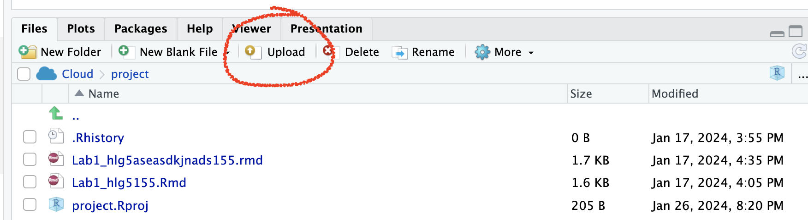
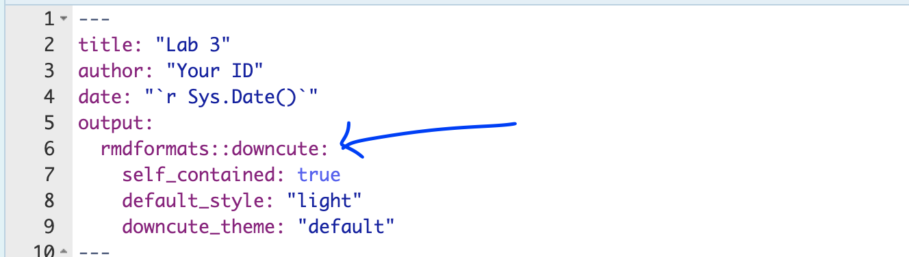

Lab 3
Aim
Welcome to lab 3. This is worth 10% (100 points) and you can drop your lowest lab out of six. The aim of the lab is to continue getting used to some basic exploratory data analysis, including
Reading in data
Basic regression
Making nice plots & summary statistics
This is a TWO WEEK LAB. You only have two lab sessions (today and next week) working on this during class. You need to finish writing up by the following Tuesday (23:59pm) e.g. just before Lab 4 starts. The maximum time it should take is about 9-10 hrs of your time (e.g 4-5 hrs each week). If you are stuck, ask for help.
1. Set up (DON’T SKIP)
[1.1] Create a project for Lab 3
If you are using the POSIT Cloud (AKA R-Studio online), log-in and make a new project for lab 3 using Tutorial 1B
If you are using R-Studio on your own computer/laptop, log in and make a new project for lab 3 using T1_ProjectsDesktop. To open/re-open your project, look in the STAT462/Lab3 folder on your computer and double click the .RProj file (I often rename it something like OPENTHIS.RProj)
[1.2] Download the lab report template
Go to the Canvas assignment page and, download
Lab1_Template.RmD,DON’T FORGET THIS STEP!
RENAME THE FILE TOLab1_Email_ID.RmD(e.g. for me,Lab1_hlg5155.RmD)
You do this by right clicking on the file on your computer and selecting rename.-
Now place the file in your Lab 3 folder
For desktop users, do this outside R. E.g. go to your downloads folder and move the file to the Lab 2 folder on your computer.
-
On Posit Cloud, open your project, then look for the upload button in the Files tab.
Expand to see where the button is

[1.3] Edit the yaml code - NEW
Inside R-studio, open your lab 2 project (if it’s not already open), then click Lab1_Email_ID.RmD to open it.
Change the author name at the top to your email ID.
-
There are many themes you can choose for your reports. Time to choose a new one. Go here - https://github.com/juba/rmdformats and scroll down. You will see many different formats. Note the name of the one you like.
In your YAML code, you should see something like this.
Change the word downcute to your new template name. You might need also to CAREFULLY delete some of the options after it (e.g. the downcute_theme line is probably not needed.)
[1.4] Check Progress & knit
You should have something like this e.g. you are in your project, you have downloaded/renamed your lab report and changed the author name. If you are stuck, either go back and redo the tutorials or talk to Dr G.
Press knit and check it all works. You might need to install some packages.
(#fig:im_Lab03_SetUp)Your screen should look like this
2. Code showcase
So far you have only dealt with data stored inside R. Here we will be practicing reading in data from files and the basics of regression code.
Click on the plot itself to draw dots; make yourself a scatterplot with negative correlation.
-
Save the data as a csv file and put it in your Lab 3 folder.
-
You will need to add column names.
- You can do this by opening it in excel and adding them in on the top row (e.g. X and Y), then saving as a
.csvor.xlsxformat. Don’t let your mac save it as a stupid format.
- You can do this by opening it in excel and adding them in on the top row (e.g. X and Y), then saving as a
-
Read the data into R using TUTORIAL 4
Make a statistical summary of the data (e.g. using the summary or skim commands in - labs 1 and 2)
Make a scatterplot and create your first linear regression model (Tutorial 6 plots - ScatterPlots scroll down to scatterplots, and Tutorial 8: Regression )
Write the gradient and intercept - and the full model equation. BONUS 1%, see if you can use Insert to write it in Latex equation format. (and google)
3: Taiwan analysis
Next month, your friend is moving to Sindian Dist., in New Taipei City, Taiwan. They want to buy a house and have asked you to figure out what most impacts house price.
In your write up I want you to imagine your are LITERALLY writing this analysis for your friend.
[Step 1]: Go to the “House Price Analysis” section of your report
[Step 2]: You have been given a specific dataset to help answer your friend’s question. Read more about the data here:https://archive.ics.uci.edu/ml/datasets/Real+estate+valuation+data+set.
In your report, define a relevant population to answer your friend’s question (start of question 3), then discuss how this data might be useful, but also any issues or limitations with the inferences you can make using this data.
[Step 3]: Describe your object of analysis and your response variable (INCLUDING UNITS).
[Step 4]: If you haven’t already, download the “Lab03_house.xlsx” dataset from the Lab page on canvas and put it into your Lab 3 folder.
[Step 5]: Use the read_excel command to load the data into your report and save it to a variable called House (Tutorial 4: Read Excel
[Step 6]: Now use R-Commands that you learned in Labs 1, 2 and the tutorials to explore the summary statistics and distribution of the House.Price column. See if you can work out:
What range of costs are “most” of the prices between? (say 68%) or the interquartile range. (Remember you can google the command for IQR, or see the boxplot tutorials in (Tutorial 6: Box Plots
Is the house price data normally distributed? See (Tutorial 5: Normal distribution
Make a professional looking histogram of the price data (see tutorial 6)
[Step 7]: Your friend has been told that houses “might be more expensive in the North” and wants you to assess this. So I want you to complete a regression analysis between the house price and a predictor of ‘Latitude’.
Create a high quality scatterplot of your response and predictor WITHOUT A REGRESSION LINE (hint, on the more sophisticated plots, you can go into help to work out how to turn it off)
Describe the scatterplot’s form, direction, strength and outliers - hint https://www.khanacademy.org/math/ap-statistics/bivariate-data-ap/scatterplots-correlation/a/describing-scatterplots-form-direction-strength-outliers
Create your first Simple Linear Regression model to assess the issue. See (Tutorial 8: Regression
Make a new scatterplot, but this time with your line of best fit added.
[Step 8]: In your report explain to your friend why this might be be misleading as an analysis? or why might this model be flawed? (e.g. are there confounding/lurking variables?
[Step 9]:
To help you answer question 8, try running this code to further explore the data on a map. You might have to first install the sf package and add library(sf) to your library code chunk (and re-run the library code chunk).
I am assuming your house data is called house (all lower case). if not, remember to change ‘house’ to whatever you called it.
# Command from the sf library
# Make a spatial version of the data using the Longitide and Latitude columns
house.spatial <- st_as_sf(house,
coords=c("Longitude","Latitude"),crs = 4326)
# make interactive, for static set as "plot"
tmap_mode("view")
# Command from the tmap library
# and plot
tm_basemap("Esri.WorldTopoMap") +
qtm(house.spatial, # data
symbols.col="House.Price", # which column for the symbols
symbols.alpha=0.9, # transparency
symbols.size=.2, # how big
symbols.palette="Spectral", #colors from https://colorbrewer2.org
symbols.style="fisher") # color breaks[Step 10]: Now continue your answer to question 8. Is there a variable that is more important than latitude in predicting house prices? Provide evidence to justify your answer. To help you answer this data and answer this question, some useful code includes:
A correlation matrix (see tutorial 7)
Interactive plots If you then want to look at three variables together, you can use an interactive plot e.g you can use this code and change the response, y (currently house price), the predictor x (currently latitude) and the colour (currently distance from the metro station). Have a play and see what variables stand out.
# Create a plot
p <- house %>%
ggplot( aes(Latitude,House.Price, col= House.Age)) +
geom_point() +
theme_classic()+
scale_color_gradient(low="blue", high="red")
# and actually plot it
ggplotly(p)- You can also use standard scatterplots and regression models if that is easier. Or even excel and screenshots embedded in your report if it is all going wrong!
- Your friend forgot to tell you that they love shopping. They only want to live in a house that is close to at least 7 shops, but are worried that they might end up paying too much.
Filter the data so that it only includes 7 or more nearby shops e.g you’re subsetting by the number of shops column (Tutorial 2C, section 1.8.6). Save the output to a new variable called
house.gt7shop. Hint, TUTORIAL HERE: https://crd150.github.io/lab2.html#FilteringRun a t.test to find out if your house.gt7shop data has a mean that is significantly higher than the mean of the house prices over the whole region. See Tutorial 6: T Distribution and homework 3, lecture 4C.
Remember to write up your hypotheses, the results and the conclusion in plain English that your friend would understand.
[Step 9]: FINAL 2%. Work out how much does the house price goes up for every 1 KILOMETER that you travel away from a metro station?
4. Submitting your Lab
Remember to save your work throughout and to spell check your writing (next to the save button). Now, press the knit button again. If you have not made any mistakes in the code then R should create a html file in your lab 2 folder which includes your answers.
For R desktop users:
If you look at your lab 2 folder ON YOUR COMPUTER, you should see your html and Rm there - complete with a very recent time-stamp.
In that folder, double click on the html file. This will open it in your web-browser.
CHECK THAT THIS IS WHAT YOU WANT TO SUBMIT.Now go to Canvas and submit BOTH your html and your .Rmd file in Lab 2.
If you are on posit cloud,
go to the files tab, then click the check box by your html file. Click the “more” blue cogwheel in the file quadrant menu options, then click export. This will download the file
Uncheck the box and check the box by your .Rmd file. Click the “more” blue cogwheel in the file quadrant menu options, then click export. This will download the file.
Now go to Canvas and submit BOTH your html and your .Rmd file in Lab 2.
Congrats! You are done.